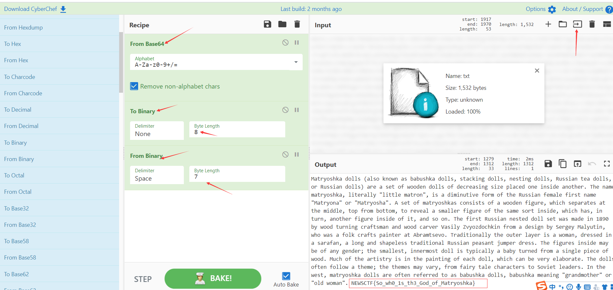

2021NEWSCTF6.1萌新赛wp-misc
MISC
sign in
- 下载得到一个pdf加密文档，直接网上搜pdf破解工具进行暴力破解。

打开得到flag：flag{welec0me_to_news_ctf}
very-ez-dump
打开发现是一道内存取证的题目，在比赛前不久刚好也有看过一点点的内存取证，但是思维还是固定在前面接触到的那一道题，所以这个题目也做了有点久，虽然只有一百分（我太菜了）。
自己的解题思路还是比较复杂and有一点点乱的。
解题：
- kali使用volatility识别一下该内存文件一些信息（一般会去识别配置文件，然后通过对应的配置文件进行其他操作）
1 | python vol.py -f mem.raw imageinfo |

- 查看一下进程信息（发现可疑进程）
1 | python vol.py -f mem.raw --profile=Win7SP1x64 pslist |
因为前面做过的一道题目就是从进程中将程序dump出来的，所以当时自己在这里也停留了蛮久。后来也是根据网上的博客对各种命令进行了尝试，因为对这个内容不是特别熟悉，最终是在历史浏览记录里得到了一些关于flag和hint的字样。
- 查看命令行历史记录（获取执行的可疑命令
1 | python vol.py -f mem.raw --profile=Win7SP1x64 cmdscan |

得到三个密码，并且也存在flag字样。
- 对文件进行关键字的搜索
1 | python vol.py -f mem.raw --profile=Win7SP1x64 filescan | grep "flag" |

- 将对应的文件dump出来
1 | python vol.py -f mem.raw --profile=Win7SP1x64 dumpfiles -Q 0x000000003e4b2070 -D /home/xiaofeiji/桌面/b |
-Q对应的是Volatility值，-D接着要保存的文件路径

- 将压缩包进行解压发现需要密码，而这里的密码就是上面查询得到的三个密码当中的一个，猜测为mumuzi对应的密码，解压得到flag。


还有一个dump出来的hint.txt文件其实没有什么用了，直接解压压缩包就知道需要密码才能打开。
hint.txt:

一些内存取证命令文章参考：
https://bbs.ichunqiu.com/thread-50838-1-1.html
https://blog.csdn.net/weixin_39837607/article/details/111649535
！了反都，了反都
- 下载附件，将文件名改为flag.zip，解压得到一个流量包文件。emm，又是我不会的流量分析。按照常规的操作方法，在wireshark打开之后，观察有http的传输，选择导出http的文件，但是吧，刚开始做的时候，根本没发现那个piz，搞得后来还尝试了追踪数据流等等方法。

- 将文件拖到winhex中，在文件末尾发现：

发现是反过来的rar
用脚本把它倒回去，把文件改成flag.rar
1 | f3 = open("flag.rar","rb").read() |
得到一个十六进制数据正确的flag1.rar压缩包，打开发现需要密码。然后去流量包中找登录密码（这点我是没有想到的，就没想到密码还要去里面找，虽然刚开始的时候翻找流量包看到了password的字样）
输入 tcp contains “login”
通过分析post方式得到密码为passwd123（这点其实也有点疑惑，Tokeii的wp里写的是这个密码是和上面得到的文件为一个数据流的，这，我也不太懂）
- 解压后得到flag.txt文件，打开是每一行都倒过来的base64隐写文件，使用官方脚本进行转换
1 | f1 = open("flag.txt",'r').readlines() |
- 在直接从网上下载一个base64的解密脚本进行解密：（Tokeii的脚本）
1 | base64chars = 'ABCDEFGHIJKLMNOPQRSTUVWXYZabcdefghijklmnopqrstuvwxyz0123456789+/' |
得到flag{md5(0)}
即flag为flag{cfcd208495d565ef66e7dff9f98764da}
这里是涉及到一个还不会脚本的我的疑惑，网上一些脚本是用不了的，我也找不出原因，因为我还看不懂，但是选择把脚本收集下来，学习之后再返回来看看是哪里出的问题。
happy六一
- 下载附件解压得到一个没有用的hint和没有后缀的happy文件，winhex打开，是一个倒序的并且没有文件头的zip文件。
网上下载翻转字节脚本：
1 | with open('happy','rb') as f: |
- winhex中打开添加文件头：504B030414。解压之后得到一个draw起来.md文件、flag.crypto和一个_key.png。
- winhex打开，_key.png末尾有一串二进制数字，转码为pwd is 123456
- 这里用到了stegpy
stegpy是一种将编码信息隐写在图像和音频文件中的程序。使用Python编写。
在kali里对其进行下载：
1 | pip3 install stegpy |
使用对应命令：
1 | stegpy -p _key=123456.png |
得到了一串字符串fERASmxgfD82SQ==
base64解密后得到一串字符，不认识，base家族真强大，，，，，


fERASmxgfD82SQ==→|D@Jl`|?6I→happy6.1
得到密码。
- flag.crypto文件需要用到Encrypto工具进行破解，输入密码：

得到一个txt，里面有很多09 20 0D0A，这里用snow解密。
snow解密我找不到对应的方法来下载snow，所以，最后一步的解密步骤只能参照wp了。
1 | snow -C flag.txt |
得到flag: flag{news_happy_t0_see_you}
base64 … or base56?
- 做misc复现的时候感觉最大的收获就是从Tokkei师傅那看到了好多他自己的思路，也get到了一个工具CyberChef。
1 | 1. 下载得到的一段很明显的base64编码，但解码后得到的是大量不可打印字符。关键点就在这里，这其实 |
由此打开网页：
https://gchq.github.io/CyberChef/

wp也是Tokeii大佬的wp,这工具原来也没有见过，就也还是先积累着吧。
🍞🧀🍞
写在前面
这题，真的好套······我复现都快没有做完的勇气了。感觉做一些比赛题还是比较有收获一点，能接触到比较多原来没有见过的知识点和工具，虽然有些地方也没有完全理解，但也是一个循序渐进的过程吧。
- 下载附件zip加密文件，拖进winhex发现末尾有一段特殊字符，题目所给的hint里提示utf-7。使用wp里所给的网站进行解码：
http://toolswebtop.com/text/process/decode/UTF-7

- 得到密码后，打开压缩包，得到一个mp4格式文件，但是不能正常打开。

由于mp4格式的文件开头一般情况下都为00，但是文件打开后开头为63，数据中也出现了很多的63，在010 Eidtor 中对其进行二进制的全文异或，保存之后发现文件还是打不开。（这个点其实我不理解，不知道为什么要全文异或一下。）

wp里说的是文件头的大小不对，这里涉及到mp4格式文件的一些构成，在这里也磨蹭了比较久。
mp4格式的文件都是由很多的box组成的。每个box有类型和长度，一个MP4文件首先会有且只有一个“ftyp”类型的box，之后会有且只有一个“moov”类型的box（Movie Box）。
标准的box开头的4个字节（32位）为box size，该大小包括box header和box body整个box的大小，这样我们就可以在文件中定位各个box。如果size为1，则表示这个box的大小为large size，真正的size值要在largesize域上得到。（实际上只有“mdat”类型的box才有可能用到large size。）如果size为0，表示该box为文件的最后一个box，文件结尾即为该box结尾。（同样只存在于“mdat”类型的box中。）
size后面紧跟的32位为box type，一般是4个字符，如“ftyp”、“moov”等，这些box type都是已经预定义好的，分别表示固定的意义。如果是“uuid”，表示该box为用户扩展类型。
大概去了解了一些这个box的意义。然后回到这个题目的话：

开头的四个字节：0x00000018表示box的长度是24个字节；
boxtype：0x66747970表示的是”ftyp”的ASCII值，box的标识；
major_brand：0x69736F6D，”isom”的ASCII值；
minor_version：0x00000200，isom的版本号；
这道题的compatible_brands（说明本文件兼容ismo,iso2,mp41三种协议的东西）是一直持续到第二行结束的，所以这里一共是16个字节，加上前面的16个字节，box的长度应该为32个字节，转为十六进制就是把原来的0x18改为0x20.
修改之后对其进行保存，在文件头看到Pk的表示，是个压缩包，在文件末尾有个”UP name”的提示。对文件解压发现需要密码。打开视频右上角有个up主的名字，对应开始的提示，密码为up主的名字：没下巴的Mr_Wang

- 解压得到一张图片，拖到010中发现爆出CRC的错误，网上找个脚本对其进行CRC爆破宽高：

脚本（网上找的）
1 | import zlib |
得到：

但是按照这个改回去好像图片也没啥变化，官方的wp是说高度被暗改过，所以CRC也被改过了。
把高度改高就好，与宽相同，保存得到一个链接。

https://wwa.lanzoui.com/icG0Tpdygfi
- 对其进行下载，解压发现需要密码，在文件末尾有一串字符，是malbolge

对其进行解密，得到密码，打开得到一张图片。010一看，文件末尾还有东西（我累了，这）

（知识点盲区，这是什么梗，我不知道。）
末尾这也不知道是怎么看出来是用OurSecert来解密打开的。）
后面的K（key）Arknights即明日方舟
根据这题目，和heart for who
能够得出“为斯卡蒂献上心脏”，根据百度

即秘钥为Skadi
（OutSecert工具的左边为加密，右边为解密区。）
可是还是······没有数据

因为文件尾的特征识别块被K：Arknights…………给干扰了，并未被识别，所以将其和后面的heart for who(5一起删掉之后得到一张长得一样的图片（嗯？）

- stegsolve查看新生成的图片和原图，在RGB的0通道都存在异样，怀疑为LSB隐写，然后他说我们联合意思就是将两个图片弄在一起，里使用stegsolve的 Image Combiner功能，AND后保存。
- 再查看新合成图片的grb0,得到flag。

flag： flag{Give_heart_to_Skadi!!!}
哇，结束了，这漫长的复现过程。也没想到居然可以这么复杂，也涉及到很多例如outsecert、malbolge这种没听过的东西，感觉这些字符编码都好难认，也是做一个积累吧。
Tokeii’wp: (10条消息) ✿2021NEWCTF6.1萌新赛✿MISC-all-WP_Tokeii想躺平-CSDN博客
写在最后
misc的题目也没有全部都进行复现，感觉有些题确实是比以前接触到的题目要复杂和新颖，例如从Tokeii那里看到的编码工具CyberChef，虽然不是很会用，但是功能确实好强大。多写题的同时还是得多总结吧。